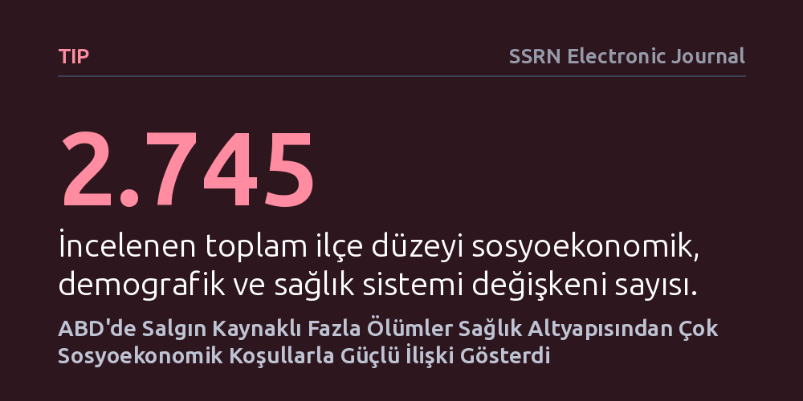

TIP · SSRN Electronic Journal · 2026-10-12
ABD genelinde 2020-2024 yılları arasındaki fazla ölümlerin sosyoekonomik durum, nüfus yapısı ve sağlık sistemi göstergeleriyle ilişkisi incelendi. Özellikle ilk iki yılda fazla ölümlerin hastane kapasitesinden ziyade gelir, eğitim ve sigortalılık durumuyla güçlü bağlantılı olduğu saptandı.
Büyük bir sağlık krizinde can kayıplarını asıl belirleyen etkenin hastane ve yoğun bakım imkanlarından ziyade toplumun temel eğitim, gelir ve sigorta güvencesi olduğunu gösteriyor.

COVID-19 pandemisi patlak verdiğinde küresel çapta tüm dikkatler hastanelere, yoğun bakım yataklarına ve solunum cihazı sayılarına odaklanmıştı. Kamuoyunda ve politika yapıcılar arasında, sağlık altyapısı güçlü ve kaynakları bol olan bölgelerin bu krizi çok daha hafif kayıplarla atlatacağına dair yaygın bir kabul vardı. Ne var ki salgın ilerledikçe, benzer sağlık imkanlarına sahip komşu bölgeler arasında bile ölüm oranlarında devasa uçurumlar belirdi.
Bu tablo, halk sağlığında temel bir soruyu gündeme getirdi: İnsanların hayatta kalmasını asıl belirleyen etken hastaneler ve tıbbi donanım mıydı, yoksa içinde yaşadıkları toplumun ekonomik, eğitsel ve sosyal koşulları mıydı? Bu sorunun yanıtı, gelecekteki krizlere hazırlanırken bütçelerin yalnızca hastane binalarına mı yoksa toplumun temel sosyal refahına mı yönlendirilmesi gerektiğini anlamak açısından kritik bir önem taşımaktadır.
Araştırmacılar, geçmiş çalışmaların yalnızca birkaç sınırlı göstergeye odaklanan dar kapsamını aşmak amacıyla ABD genelindeki tüm ilçeleri kapsayan geniş çaplı bir veri taraması gerçekleştirdi. Çalışmada demografik yapı, ırk ve etnisite, hane geliri, sağlık sigortası, eğitim düzeyi, istihdam, konut şartları ve sağlık sistemi kapasitesini temsil eden tam 2.745 ilçe düzeyi değişken bir araya getirildi. Bu değişkenler anlamsal içeriklerine göre 11 ana üst kümede sınıflandırıldı.
Ekip, salgın öncesi döneme ait bu göstergeleri 2020 ile 2024 yılları arasında her yıl kaydedilen yaşa göre standartlaştırılmış fazla ölüm oranlarıyla karşılaştırdı. İlçeler nüfus büyüklüklerine göre ağırlıklandırılarak Pearson korelasyon katsayıları hesaplandı. Elde edilen bulguların sağlamlığını doğrulamak adına Spearman korelasyonları, farklı nüfus ağırlıklandırmaları ve geçmiş yıllara ait referans veriler kullanılarak ek duyarlılık analizleri de yürütüldü.
Analiz sonuçları, sağlık altyapısının ölümlerle ilişkisinin beklenenden çok daha zayıf kaldığını ortaya koydu. İncelenen 2.745 değişkenden orta ve güçlü düzeyde ilişki yakalayanların neredeyse tamamı sosyoekonomik ve demografik kümelere aitti. En güçlü koruyucu bağ üniversite mezuniyeti oranında (-0,54) ve yüksek hane gelirinde (-0,53) saptandı; yani eğitimli ve varlıklı nüfusun yoğun olduğu ilçelerde fazladan ölümler belirgin şekilde daha düşüktü. Buna karşılık, 40-64 yaş arası yetişkinlerde sağlık sigortasızlığı ölüm artışıyla en güçlü pozitif ilişkiyi (+0,53) verdi.
En dikkat çekici karşıtlık ise sağlık sistemi göstergelerinde görüldü. Sosyoekonomik ve demografik değişkenlerin yüzde 31'i fazla ölümlerle en az orta düzeyde korelasyon gösterirken, sağlık sistemi kapasitesine dair göstergelerin yalnızca yüzde 7'si bu düzeye ulaşabildi. Üstelik bu ilişkiler ağırlıklı olarak 2020 ve 2021 yıllarında belirgindi; 2020'de değişkenlerin yüzde 9,1'i, 2021'de ise yüzde 8,5'i bu eşiği aşarken, 2022'de bu oran yüzde 1,8'e, 2023'te ise yüzde 0'a geriledi.
Elde edilen sonuçlar, bir salgının yıkıcı etkisinin tıbbi imkanların yetersizliğinden çok toplumdaki yapısal eşitsizliklerden beslendiğini göstermektedir. Hastane yataklarının veya doktorların varlığı, insanların doktora gitmeye ekonomik gücünün yetmediği ya da güvencesiz işler nedeniyle evde kalamadığı ortamlarda koruyucu bir kalkan oluşturamamıştır. Tıbbi teknolojinin tek başına toplumsal kırılganlıkların yerini tutamayacağı açıkça anlaşılmaktadır.
Öte yandan, güçlü korelasyonların salgının ilk iki yılından sonra neredeyse tamamen ortadan kalkması da önemli bir dinamiktir. Aşılama oranlarının artması, virüs varyantlarının hafiflemesi ve toplumda bağışıklık katmanlarının oluşmasıyla sosyoekonomik farklılıkların ölüm oranları üzerindeki belirleyici etkisi zayıflamıştır. Yine de ilk şok anlarında en ağır bedeli en savunmasız kesimlerin ödediği gerçeği, halk sağlığı hazırlığının merkezine sosyal adaleti ve kapsayıcı sağlık güvencesini koymanın vazgeçilmez olduğunu kanıtlamaktadır.